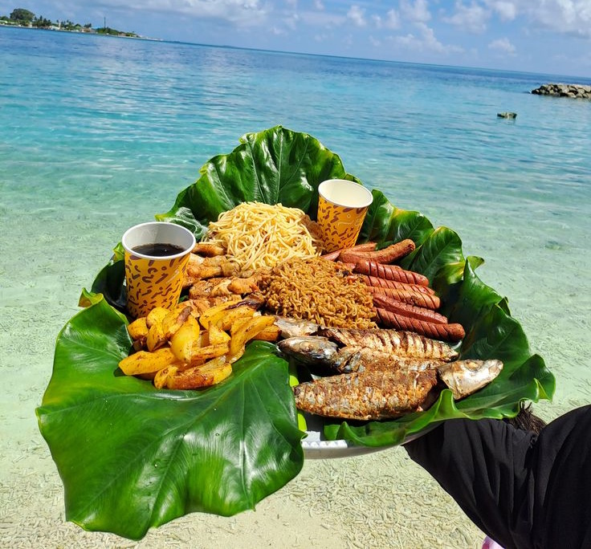

Le Pilao
C’est le roi incontournable des grands événements et des célébrations à Mayotte. Le pilao est un plat de riz richement épicé et garni de viande (généralement du poulet ou du bœuf) qui rassemble les familles lors des mariages traditionnels (Manzaraka).
Ce chef-d'œuvre culinaire se caractérise par sa couleur joliment dorée et ses effluves envoûtants d'épices chaudes qui se diffusent dès l'ouverture de la marmite.
Le secret de sa préparation
Tout réside dans l'art de faire dorer et caraméliser la viande au fond de la marmite avant d'y ajouter un mélange d'épices pilées très précis : cardamome, clous de girofle, cannelle, cumin et poivre noir. Le riz est ensuite jeté directement dans ce bouillon parfumé pour qu'il absorbe l'intégralité des saveurs pendant sa cuisson à l'étouffée.
Il est coutume de le servir chaud, souvent accompagné d'un rougail de tomates bien pimenté ou d'une salade d'oignons croquants pour apporter une touche de fraîcheur acidulée.